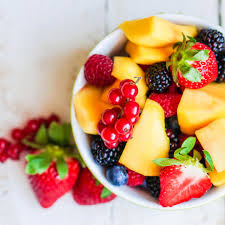
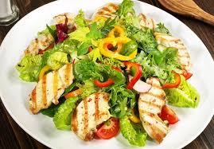

Ingredientes
1 Unidad Pimiento Rojo Cortado en tiras finas
1 Unidad Naranja Sólo los gajos
2 Tazas Lechuga Bien lavada
1 Cucharada Mostaza Maggi®
1 Taza Rábano Cortado en rodajas
3 Cucharadas Vinagre
1/4 Taza Mermelada De Naranja
Instrucciones
Colocar ingredientes
En una ensaladera, coloque todos los ingredientes, de manera decorativa.
Prepara el aderezo
Para el aderezo, mezcle todos los ingredientes
Antes de servir
Bañe con la salsa la ensalada, sólo unos minutos antes de servir..

Ensalada de frutas
Ingredientes
1 banana
2 naranjas
1/2 piña pequeña
1 kiwi
1 manzana
18 uvas
2 peras
1 rodaja de sandía a trozos
Preparación
Corta la manzana, la banana, la sandía, las peras y el kiwi en trozos pequeños. También corta las naranjas en gajos, y luego cada gajo en dos o tres.
Pica las uvas a la mitad, y si tienen semillas, retíralas. Coloca todas las frutas en un recipiente.
Si quieres, puedes preparar una salsa a base de aceite de oliva, zumo de media naranja y un poco de miel para acompañarla. ¡Queda deliciosa! De lo contrario, puedes añadirle un poco de jugo con azúcar para que la fruta quede más tierna y dulce.
Deja estacionar en la heladera por una hora para que las frutas absorban la salsa y también vayan liberando sus propios jugos. ¡Y tu ensalada de frutas estará lista para servir!
Como te he dicho, las posibilidades al hacer una ensalada de frutas son infinitas. Prueba con las combinaciones de tus frutas favoritas o simplemente con las que tengas en casa. ¡Aprovecha para usar tu creatividad!

Ensalada de pollo
Cómo hacerlo
1. Cuece las zanahorias y las papas en agua hirviendo con sal. Deja que las zanahorias hiervan durante 8 minutos y retira de la olla. Permite que las papas hiervan entre 20 y 25 minutos, hasta que puedas picarlas fácilmente con un tenedor.
2. Mientras, coloca la pechuga de pollo dentro de una olla. Cubre con agua y agrega cebolla, ajo, laurel y sal. Cocina a fuego alto hasta que empiece a hervir, reduce el fuego a bajo y cocina hasta que las pechugas se hayan cocido, aproximadamente 15 minutos.
3. Hierve aparte los chícharos durante 2 o 3 minutos. Escurre bien.
4. Pica las papas y las zanahorias, y deshebra la pechuga de pollo.
5. Coloca las papas, zanahoria, pechuga de pollo, chícharos, apio y perejil en un tazón. Mezcla aparte la crema con la mayonesa y la mostaza, y vierte sobre la ensalada. Mezcla muy bien y sazona con sal y pimienta.